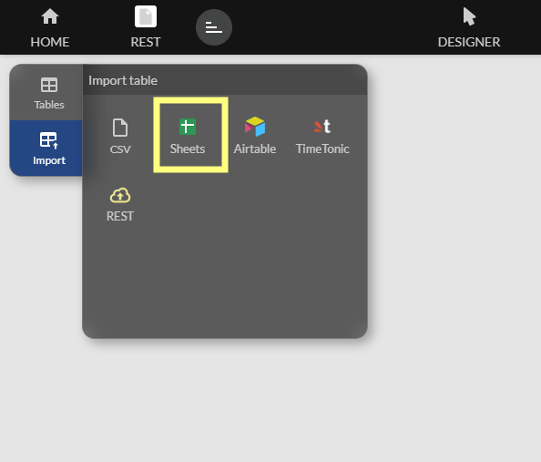
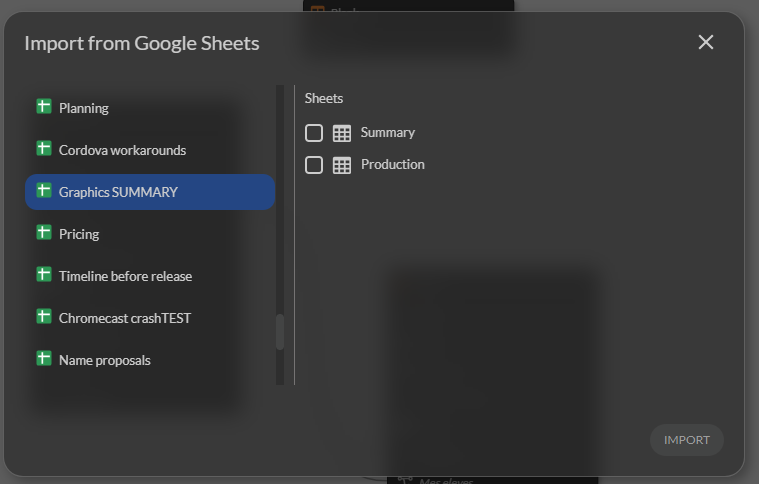
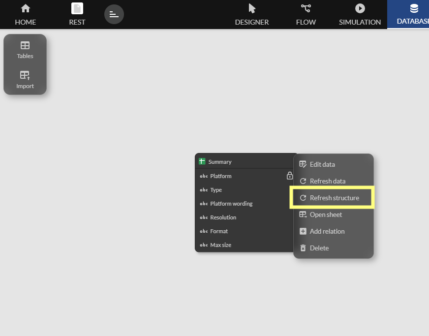
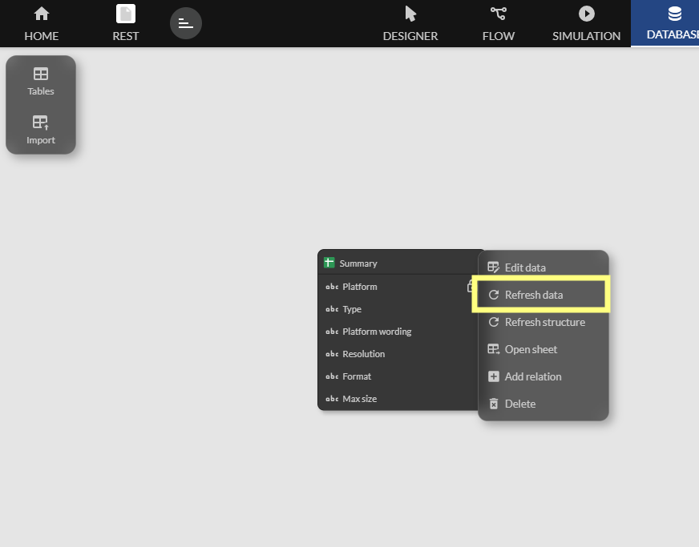

Google Sheets
Zyllio lets you connect and use data from Google Sheets. With this feature, you can retrieve and use spreadsheets directly in your application.
Connecting to Google Sheets
Open Zyllio Studio, go to the Settings tab in the left menu, select the Google Sheets option, and enable the Enable button. Then click the Connect button. This opens a window where you can select your Google account.
Choose the Google account you want to use to access your Google Sheets. Once connected, you will see a status message indicating that the connection was successful: Connected.
Accessing Google Sheets
From the Database tab, click the Import button to display external data sources, then select Sheets.

The next window lets you select the Google Sheets document and then the sheet or sheets you want to import.

Once imported, you get a new table.

Key Points
Google Sheets does not include a mechanism to uniquely identify rows. To perform update operations, the first column must define a unique identifier. If this is not the case, a warning will be displayed.
The first column must uniquely identify each row. The value can be a commonly used unique number, or any text, as long as uniqueness is respected.
Example:

Formats
The date format must be YYYY-MM-DD.
Decimal numbers must use the Text format in the Sheet column and use a decimal point.
Google Sheets columns with formulas should not be used. They do not cause any issue when reading data, but they may be overwritten during updates (Update-Row).
Limitations
Zyllio limits the Google Sheets range to 52 columns (A-Z and AA-AZ).
Structure Synchronization
When you make structural changes in your Google Sheets, such as adding columns, these changes do not appear in Zyllio. To synchronize these changes, click the Refresh Structure button. Once the synchronization process starts, Zyllio adds and removes fields based on the changes.
Zyllio does not modify the column structure in your Google Sheets.

Data Synchronization
Zyllio sets up a data cache to improve Google Sheets access performance. As a result, changes made from Google Sheets or from an external automation may not be visible immediately in Zyllio. A delay of up to 1 minute may be required.
To force a refresh, click the Refresh Data button.
